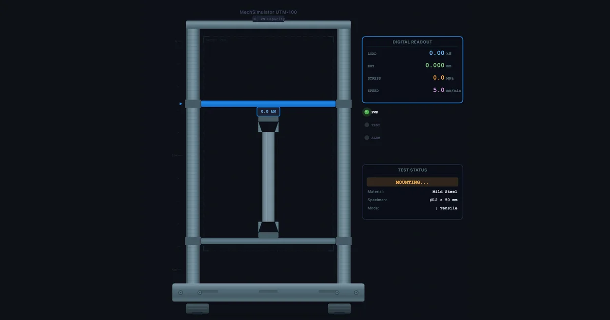
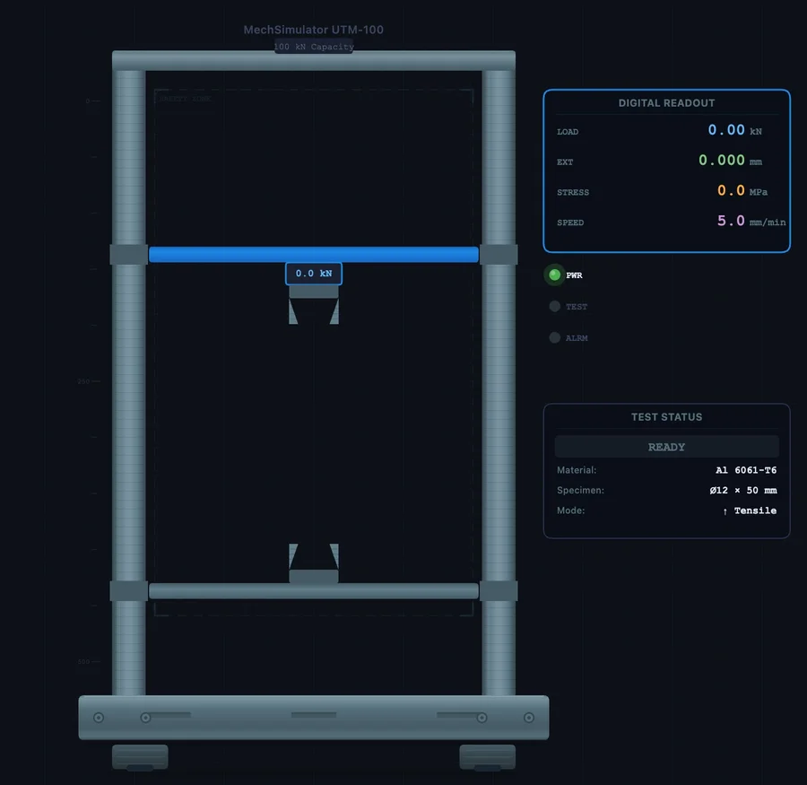
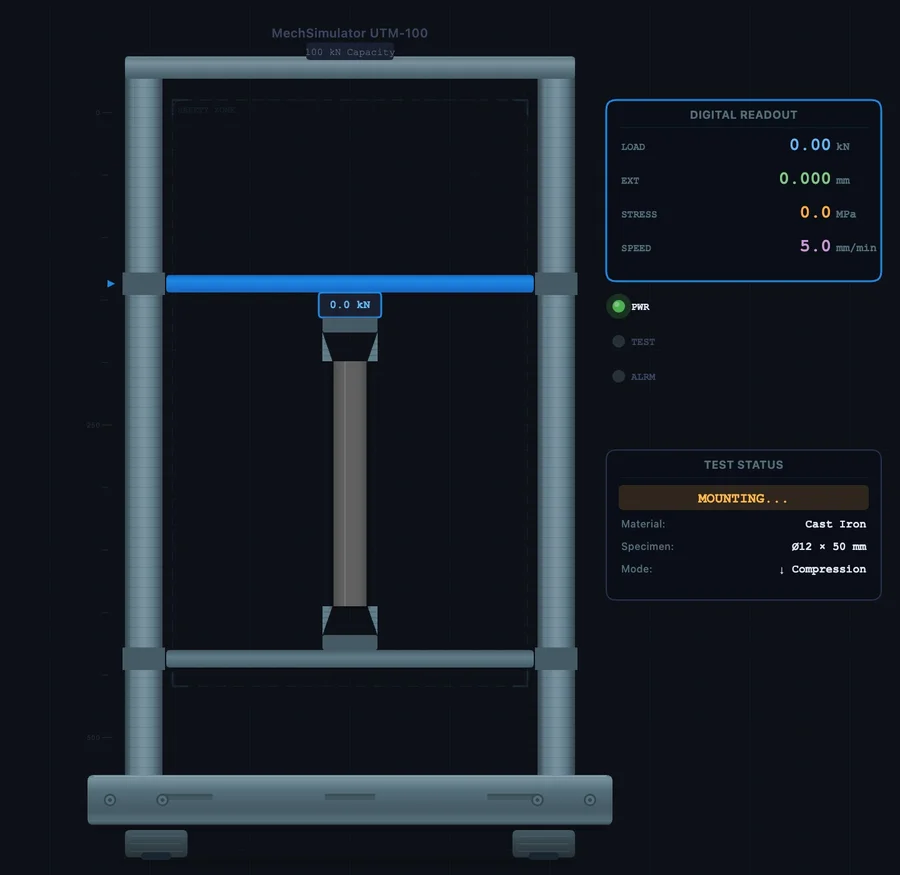

Universal Testing Machine Virtual Lab — A Complete Practical Guide

- A universal testing machine (UTM) virtual lab runs tensile and compression tests on materials, plotting engineering stress (σ = F/A₀) against strain in real time to extract Young's modulus, yield strength, UTS, %EL, and %RA.
- Standard tensile procedure: select material → set test type → mount specimen → start → observe the yield point, UTS, and fracture → read the results; yield strength is σy = Fy/A₀ (for a 12.5 mm round specimen A₀ = 122.7 mm²).
- Materials behave distinctly — mild steel shows a sharp upper/lower yield point, aluminium yields gradually (use the 0.2% offset method), and cast iron is brittle in tension but roughly 3.5× stronger in compression.
A physical UTM test takes 20 to 40 minutes — preparation, specimen mounting, running the test, cleaning up, and then writing up results. In a class of 24 students split into groups of four, that's six tests, probably two sessions, and significant competition for machine time. The virtual lab doesn't replace that experience. But it does something the physical lab can't: it lets every student run their own test, on their own material, in their own time, and immediately compare the results with four other materials without waiting for anyone else.
This guide walks through the UTM Virtual Lab in full — interface layout, how to run a tensile test from scratch, how to run a compression test, what the results mean, and how to structure comparison exercises that build genuine materials understanding.
A Tour of the Simulator Interface
Before running any test, it's worth understanding what you're looking at. The UTM Virtual Lab is divided into three main areas.
Left panel — the machine. The animated UTM occupies the left side. You'll see the frame, the upper crosshead (which moves), the lower platen or grip, and the test specimen in between. The crosshead indicator shows how far the crosshead has travelled. During a tensile test, the upper grip moves upward; during compression, the upper platen moves downward. Watch the specimen carefully — the elongation and necking animation is physically accurate for each material type.
Right panel — the curve and readouts. The stress-strain graph plots in real time as the test runs. Below it, a readout panel shows the current values: applied force (kN), engineering stress (MPa), engineering strain (mm/mm), and crosshead displacement (mm). After the test, the results panel adds: Young's modulus, yield strength, UTS, elongation at fracture (%EL), and reduction in area (%RA).
Top toolbar — controls. Left to right: mode tabs (Simulate / Explore / Practice / Quiz), unit toggle (SI / Imperial), specimen mount button, test type toggle (Tensile / Compression), Start/Stop button, Reset, CSV export, and PNG screenshot. The material selector runs along the bottom of the screen.
One thing students often miss: the Explore mode. Switch to it and the right panel transforms into a component explorer — click the crosshead, load cell, grips, or extensometer to get a detailed technical description of each component, how it works, and what measurement it provides. That's worth spending five minutes on before the first test.
Running a Tensile Test — Step by Step
Here's the exact procedure to run a complete tensile test on mild steel. Follow it once. Then repeat it on every other material and record the comparison table in the section below.
- Select the material. Click Mild Steel in the material selector at the bottom. The specimen in the machine updates to show the correct geometry — a cylindrical dogbone shape with a narrowed gauge section.
- Set test type to Tensile. Click the ↑ Tensile button. Check that the arrows on the machine animation show the grips pulling in opposite directions.
- Mount the specimen. Click the ⚙ Mount button. The specimen locks into the grips. You'll hear a click and the specimen becomes active. This step matters — if you skip it, the Start button is inactive.
- Start the test. Click ▶ Start. The crosshead begins moving upward. Watch the stress-strain curve start plotting from the origin. In the elastic region, the curve is a straight line — the slope here is Young's modulus.
- Observe the yield point. For mild steel specifically, watch for the characteristic upper yield point followed by a sudden drop to the lower yield plateau. This is the dislocation release event in the crystal lattice — it looks abrupt and dramatic, and it happens fast. Pause (click Stop) if students need more time to observe it. Resume by clicking Start again.
- Continue through UTS and fracture. The curve rises gradually through strain hardening, reaches the peak at UTS, then descends as necking localises the deformation. In the animation, watch the specimen thin at the narrowest point. The test ends automatically at fracture.
- Read the results. The right panel now shows all five values: E, σy, UTS, %EL, %RA. Write them down, or click 💾 CSV to export the full curve data as a spreadsheet.
Total time: about three minutes. Reset by clicking ↺ Reset and you're ready to go again.

Reading and Recording Results — What Each Value Tells You
The results panel gives you five numbers after every tensile test. Here's what they actually mean for engineering decisions — not just definitions, but the practical implication of each value.
Young's modulus (E, GPa). The slope of the elastic region. Mild steel: ~200 GPa. Aluminium: ~69 GPa. This controls elastic deflection — if you're designing a beam and deflection matters, E is the critical material property. Changing from steel to aluminium at the same cross-section triples your deflection under the same load. Heat treatment and alloying barely change E; it's a fundamental atomic bond property.
Yield strength (σy, MPa). The stress at which permanent deformation begins. This is your primary design limit — components in service must stay below this. For mild steel ~250 MPa. For Al 6061-T6 ~276 MPa. For copper ~70 MPa. Note that aluminium has a higher yield than mild steel for the same geometry — yet mild steel is three times stiffer. The choice between them depends on whether you're designing for stiffness (use E) or strength-to-weight (use σy/ρ).
Ultimate tensile strength (UTS, MPa). The peak of the engineering stress-strain curve — the maximum stress before necking begins. For mild steel ~400 MPa, copper ~220 MPa, cast iron ~200 MPa (in tension). UTS is used for quality control and failure analysis, but yield strength governs design because the material has already permanently deformed before it reaches UTS.
Elongation at fracture (%EL). How much the gauge length increased by the time the specimen broke, expressed as a percentage of the original gauge length. Mild steel: ~25%. Cast iron: ~1%. This is your ductility indicator. High %EL means the material gives visible warning before fracture — you see the necking before the break. Low %EL means sudden brittle failure without warning. Design codes for structural applications typically require minimum %EL values (usually >12–15%) precisely for this reason.
Reduction in area (%RA). How much the cross-sectional area decreased at the fracture point, compared to the original. This is a more sensitive measure of ductility than %EL because it captures the localised necking directly. Mild steel: ~65%. Cast iron: essentially 0%. Copper: ~75%. In practical terms, %RA above 50% indicates a very ductile material with substantial energy absorption before fracture.
Use this table to record your results across all five materials:
| Material | E (GPa) | σy (MPa) | UTS (MPa) | %EL | %RA | Behaviour |
|---|---|---|---|---|---|---|
| Mild Steel | Ductile — distinct yield | |||||
| Al 6061-T6 | Ductile — gradual yield | |||||
| Copper | Highly ductile | |||||
| Cast Iron | Brittle | |||||
| Rubber | Hyper-elastic |
Compression Testing — Where the Rules Change
Switch the test type to ↓ Compression, mount the specimen, and run the same procedure. The crosshead now moves downward, pressing the specimen between the upper platen and lower platen. What you see is fundamentally different from the tensile test — and the difference matters.
For ductile materials (mild steel, copper, aluminium), there is no necking in compression. Instead, the specimen barrels outward — the middle bulges as friction at the platen contact surfaces restrains the top and bottom faces. The stress continues to rise beyond UTS because there's no localised instability to cause load drop. If you run the test to full compression, the specimen becomes a disc. The compressive strength equals the tensile strength for ductile metals.
For cast iron, the compression test looks completely different. The tensile curve fractures at very low strain with minimal plasticity. The compressive curve climbs much higher before fracture — cast iron's compressive strength is approximately 3.5 times its tensile strength. And the fracture mode changes: instead of the flat perpendicular fracture of a tensile test, compression fracture occurs at approximately 45 degrees to the loading axis. This is a shear fracture, caused by the maximum shear stress acting on the 45-degree plane. The specimen appears to split diagonally. That observation alone is worth a full discussion on Mohr's circle and principal stress planes.
For rubber, compression produces a rising S-curve with no fracture at typical engineering strains. The material simply compresses elastically and springs back when released.
A useful classroom exercise: run a cast iron tensile test and a cast iron compression test back to back. Ask students to record the ratio of compressive UTS to tensile UTS, then explain why a cast iron engine block is designed to be loaded primarily in compression. The answer — cast iron is roughly three times stronger in compression — makes the material choice make engineering sense rather than seem arbitrary.

Five Structured Comparison Exercises
These exercises are designed to build specific materials understanding, not just produce numbers. Each takes about ten minutes in the simulator.
Exercise 1 — Stiffness comparison. Run tensile tests on mild steel and aluminium. Read off E for both. Calculate: if you replace a steel rod (20 mm diameter, 500 mm long) with an aluminium rod of the same dimensions, by what factor does elastic deflection increase under the same load? Answer: Esteel/EAl ≈ 200/69 ≈ 2.9 times. Now work out what diameter aluminium rod would give the same deflection as the steel rod.
Exercise 2 — The yield drop observation. Run mild steel in tensile, at normal test speed. Observe the upper yield point drop. Then reset and run the test again but pause just before the estimated yield point (watch the curve plateau approach). Resume at half speed. The yield drop is a materials-science phenomenon tied to carbon atom pinning of dislocations — first observed by Lüders in 1860. Ask students to sketch what the curve would look like for a pre-strained mild steel specimen that has already gone through the yield drop once.
Exercise 3 — Ductility ranking. Run all five materials in tensile mode. Record %EL and %RA for each. Rank them from most to least ductile. Then check: does the material with the highest %EL always also have the highest %RA? (Usually yes for these five, but discuss why the two measures can diverge in real materials with inhomogeneous microstructure.)
Exercise 4 — Brittle vs ductile fracture energy. The area under the stress-strain curve to fracture is the modulus of toughness — energy absorbed per unit volume. Compare cast iron and copper. Which is tougher despite having a lower UTS? (Copper — its very long plastic region means a much larger area under the curve.) This is why tough materials are used for impact-resistant applications even when their UTS is lower.
Exercise 5 — Compression vs tension for brittle materials. Run cast iron in both tensile and compression mode. Record tensile UTS and compressive UTS. Calculate the ratio. Repeat for mild steel. Compare the ratios. For mild steel, tensile and compressive strength are nearly equal. For cast iron, compressive strength is far higher. Discuss the design implication: cast iron columns (in compression) are safe; cast iron tension members are not.
Connecting to ASTM E8 and ISO 6892-1 Standards
The virtual lab is calibrated to realistic material behaviour, and the test procedure matches the key requirements of the two main tensile testing standards. Understanding those standards is part of the engineering curriculum in most TVET and diploma programmes.
ASTM E8/E8M is the American standard for tension testing of metallic materials. Key specifications: standard round specimen diameter 12.5 mm, gauge length = 4 × diameter = 50 mm. Test speed: strain rate of 0.015 ± 0.003 mm/mm·min in the elastic region. The standard defines how to report yield strength (proportional limit, upper yield point, or 0.2% offset depending on material type), UTS, elongation, and reduction of area.
ISO 6892-1 is the European/international equivalent, with two important differences. Gauge length is defined proportionally as L₀ = 5.65√A₀ — for a 12.5 mm diameter specimen, this gives L₀ = 5.65 × √122.7 ≈ 62.5 mm, slightly longer than the ASTM value. More significantly, ISO 6892-1 controls strain rate in the elastic-plastic transition zone rather than crosshead speed, which gives more consistent results across machines with different compliances.
In the simulator's Explore mode, the Standards panel covers both ASTM E8 and ASTM E9 (compression), including the design equations, specimen geometry formulas, and a set of worked problems. Use these as pre-reading before the physical lab session — students who've worked through the standard requirements arrive knowing what the machine operator is doing and why, which dramatically improves their engagement during the physical test.
For the theoretical underpinning of everything the simulator produces — how to read the curve, what the five regions mean, the formulas for E and σy — see the companion article: How to Read a Stress-Strain Curve. That article covers the theory; this one covers the practical operation.
Open the Lab and Start Testing
- UTM Virtual Lab — Tensile and compression tests on 5 materials. Simulate, Explore, Practice, and Quiz modes. CSV and PNG export. SI and Imperial units.
- Stress-Strain Diagram — Interactive curve explorer with draggable cursor — read exact stress and strain values at any point, compare ductile and brittle curves simultaneously.
- Impact Testing Virtual Lab — Charpy and Izod pendulum tests across 7 materials. DBTT curves show how the same material transitions from ductile to brittle behaviour as temperature drops.
Key Takeaways
- The UTM Virtual Lab runs tensile and compression tests on five materials — Mild Steel, Cast Iron, Copper, Al 6061-T6, and Rubber — each with physically accurate stress-strain behaviour.
- Full test procedure: select material → set test type → mount specimen → start → observe yield/UTS/fracture → read results (E, σy, UTS, %EL, %RA).
- Mild steel shows a distinct upper and lower yield point. Aluminium yields gradually — use the 0.2% offset method. Cast iron is brittle in tension, with almost no plastic deformation before fracture.
- Compression tests produce different fracture modes: ductile materials barrel, brittle materials fracture at 45° (shear failure). Cast iron is ~3.5× stronger in compression than tension.
- The area under the stress-strain curve = modulus of toughness. Copper absorbs more energy than cast iron despite a lower UTS, because toughness depends on the entire curve shape, not just the peak stress.
- Explore mode contains component descriptions, standard references (ASTM E8/E8M, ASTM E9, ISO 6892-1), and worked problems — use it as a pre-lab reference, not just a navigation aid.
Frequently Asked Questions
What materials can be tested in the UTM Virtual Lab?
Five materials: Mild Steel (distinct upper/lower yield point), Cast Iron (brittle — fractures at low strain), Copper (highly ductile, very low yield), Al 6061-T6 (gradual yielding, 0.2% proof stress), and Rubber (hyper-elastic, non-linear, very large strains). Each produces a distinctly different curve shape.
What is the difference between tensile and compression testing?
Tensile: specimen pulled apart. Shows yield, strain hardening, necking, and fracture. Ductile fracture is perpendicular to the load axis. Compression: specimen squeezed. Ductile materials barrel outward; brittle materials fracture at 45° shear plane. No necking in compression — ductile stress rises continuously. Brittle compressive strength is 3–4× higher than tensile strength.
How do you calculate yield strength from a UTM test?
σy = Fy / A₀. Record the load at yield (kN), divide by original cross-sectional area (mm²). For a 12.5 mm diameter specimen, A₀ = π × 12.5² / 4 = 122.7 mm². For materials without a distinct yield point, use the 0.2% offset method — draw a line parallel to the elastic slope from 0.2% strain and read the intersection stress.
What does gauge length mean in a tensile test?
Gauge length (L₀) is the reference distance over which elongation is measured. ASTM E8: L₀ = 4d₀. ISO 6892-1: L₀ = 5.65√A₀ ≈ 5d₀. After fracture, %EL = (Lf − L₀)/L₀ × 100. Always use the same standard when comparing %EL values across tests or materials.
What is the 0.2% offset method for yield strength?
For materials with no distinct yield point, draw a line parallel to the elastic slope offset by 0.002 (0.2%) along the strain axis. Where it intersects the curve is the 0.2% proof stress. It represents the stress producing 0.2% permanent plastic strain. Used for aluminium alloys, stainless steels, and most non-ferrous metals.
The UTM is one of the most widely used instruments in materials engineering, and understanding how to operate one — and what the data means — is a core competency for any engineering graduate. The virtual lab gives students a way to develop that competency without queuing for machine time, without consuming specimens, and without the time pressure of a fixed lab slot. Run it before the physical session to prepare, run it after to check your understanding, and run the comparison exercises whenever you want to see the numbers rather than just read about them.
The simulator is free, browser-based, and requires no account. Open it and start a test.